Hallo Du!
Ich bin Teala und meine Mission auf dieser Seite ist es, über Teal und andere Themen der New Work zu berichten. Das möchte ich so tun, dass sich jede*r daran orientieren kann - egal, ob man schon lange auf der Reise ist oder gerade erst aufbrechen möchte.
Neben dieser wichtigen Mission spiele ich außerdem ein bisschen Spion auf der Arbeit und werde Euch Einblicke geben, was sich bei /gebrüderheitz und natürlich auch auf deren Teal-Reise so tut!
Hier geht's weiter mit Teal und New Work!
Hier ein kleiner Wegweiser zu einigen Teal-Themen (und natürlich auch zu mir) auf meiner Seite. Klick Dich rein und lass mich danach gerne wissen, was Du dazu denkst!
Was genau ist Teal?
Wenn Dir Teal und die ganze Geschichte mit Frederic Laloux' Reinventing Organizations noch nicht so viel sagt, bist du hier genau richtig!
Wo finde ich mehr Infos zu Teal und New Work?
Sehr gute Frage! Dafür habe ich Dir eine kleine Literatursammlung zusammengestellt mit Büchern, Podcasts, Blogs, ... Schau mal hier rein!
Wer bist Du überhaupt?
Ich bin Teala, arbeite für die Webagentur /gebrüderheitz und mag Teal. :) Mehr zu mir findest du hier!
Und was ist die Geschichte mit /gebrüderheitz?
Unsere Hintergrundgeschichte und wie es zu dieser Seite gekommen ist, kannst du hier nachlesen.